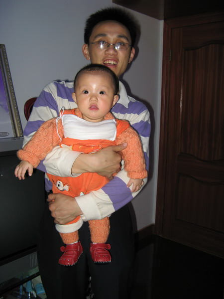

[真实][求助]我什么时候能继续我的五子人生
#1 [真实][求助]我什么时候能继续我的五子人生作者：小丸.net 发表时间：2007-6-17 10:09:38
人物：我，老婆，老妈，妹妹
关键字：妹妹嫁得近，经常回家，老婆不高兴。
事件：妹妹嫁的很近，所以经常回家来，而且一个儿子很烦，老婆肯定是高兴。前几天妹妹来以后，老婆就要楼下说小孩子烦，妈妈就出来说老婆做得不对，不应该赶妹妹，当时妹妹好像要跟老婆吵起来一样的。
然后当天晚上快吃饭的时候，老婆又到楼下，因为家里开了托儿所，外甥要单独玩一样玩具，老婆说：这个玩具大家可以玩的，妹妹呢，偏要把玩具给她儿子玩，就这样又吵了起来，这时，妈妈跑过来，二话不说要打我老婆，性亏我挡住了，要还老婆肚子里的五个月的宝宝就没了。
这件事后，我跟老婆就拿了些衣物，出来租了旅社，大姑妈和大舅舅知道这件事后，都来劝我们回家，昨天我们就回去了，然后妹妹又回来了，我就跟妹妹说：知道妈妈和我老婆因为你和你孩子不和，你以后能不能少回来几次（我这个人忠厚老实，说不出重话）。谁知道妹妹说：是我娘家，我怎么不要回来呢。可是我说：我不是不准你回来啊，只是你回来的频率太高了一些（这些话，其实我是不想说的，可是发生了这件事，我不得不说了）。但妹妹一直跟我顶嘴，也不肯让步，她的意见是：是娘家就要回来，而且离娘家近，要多回来（况且，我妹妹最近夫妻也不和）。
我总结了一下：
1、老婆不对的地方：不应该去阻止妹妹回来
2、妈妈不对的地方：我老婆再有什么错，妈妈也不应该打我老婆（况且再过几个月，宝宝就快出生了）
3、妹妹不对的地方：不是我说她回来的次数太多，而是发生了”打人“事件后，事情明了，你就少回来吧。
我现在好迷茫啊，目前我们住在旅社，准备出来租房子住。请各位XDJM帮帮我，我下一步该怎么办？怎么样在不伤害任何一方的情况下，家庭和睦。这几天我可都睡不着啊。
想对江阴五子棋大侠说：大侠，这几天我真的烦事缠身，我快要崩溃了，所以这段时间，江阴五子棋的事务就全部由您来负责，等我处理完这些事后，再来向我们江阴全体成员道歉。谢谢！
#2 Re:[真实][求助]我什么时候能继续我的五子人生作者：有志青年 发表时间：2007-6-17 12:23:44
看到小丸的帖子，我觉得有几点要说的。
首先，小丸的家庭结构应该和我家差不多，我也有一个妹妹，妹妹也隔三岔五的回来住，老爸老妈住平房，妹妹住单体〔上下各一间〕楼房的楼下，我和老婆住楼上；妹妹怀孕了，预计8月底生产。
不过，老婆和我妹妹关系挺好，化妆品都是合用的；妹妹在家的时候，我孩子基本都是她带着；我因为大妹妹5岁，从小都是我协助爸爸教育妹妹，现在各自成家后，该教育为沟通，一般来说，我的话比我爸爸的话容易让她接受。
上面说的是姑嫂之间的关系
其次，我老婆刚来我家的时候，老娘也是横竖的挑毛病，例如现在依然挂在口头的“就是不做家务”，就连我们自己房间的卫生有时候也是我做的。在我看来婆媳矛盾是必然存在的，只是如何化解和缓和的问题，而这个矛盾的关键在于谁？在于儿子，在于老公，也就是你我。让所有的矛盾都在我们身上堆积，然后我们通过各种方式去消化这种矛盾，你我就像一个大的垃圾桶。我老爸在婆媳关系上常教育我妈“你多栽花，种刺的事情我来做”，是呀，婆媳之间，老婆多栽花，多拍拍马匹，儿子多出头找骂。
举个例子，儿子想给老娘买一辆电动车，首先和老婆商量，此事行否，这当中要充分体现妇女半边天的地位，但是最后拍板依然是爷们决定；之后，儿子和老娘汇报“妈，你每天上街买菜骑自行车也不方便，你儿媳妇觉得给你买辆电动车方便一些，我们下午打算去买，你喜欢什么款式的？和我们一起去？”说这个话的时候老婆要在场，如果一起去就当和老娘逛街散心，如果不去，就和老婆到市内潇洒一下，晚上带一辆车回来；车回来后，钥匙应该由老婆交给老娘。
上面是个给老婆制造栽花的机会，再举个例子。
老娘一天很不高兴“你看看你媳妇，房间里被子也不叠，地上乱七八糟，你也不说说？”你回来将此事转告老婆？千万不能。你直接回老娘“今天早上我起来晚了，她先上班去的，地上我马上去整理”此事就过去了。
老婆一天不高兴“你看看你妈，又买了好东西到你妹妹家去了，怎么没有看到买什么好东西给我们？”得，此事也不要转告，你直接回复老婆“我们平时住在家里，倒是难得去小妹家，去买点东西也是正常的，我们平时在家还不都得老娘照应，再说，家有一老如有一宝呀。”
因此，我觉得，问题的关键在于你！
还有，不管有什么事情，你绝对不可以带着老婆离家住旅馆的。这个家是你的，你是长子，在你家中你都不能给你老婆安全，在旅馆中会有安全？
你应该带着老婆回家，所有责任都是你的，你向老娘认错！！！！！！
另，此事不可以作为你放弃或者放缓五子棋或者工作的理由！！！！！！！！！！
男子汉就得有脊梁，除非脊梁压断！！
方法总比困难多！！！！！！！！！！
#3 Re:[真实][求助]我什么时候能继续我的五子人生作者：黄药师 发表时间：2007-6-18 23:19:56
随便嚼两句：
1、据说怀孕期间的妇女心情容易烦躁不安。康夫人目前这个情况应该是正常的，你应该多体谅他。
2、你也说了你妹妹家庭那边也出了状况，她回娘家就是为了找人安慰她，而现在不仅得不到安慰，反过来自己的大哥大嫂却不是太“欢迎”（这个词语也许用了不恰当），你想想她的心情如何。
3、个人觉得你才是关键，你是妹妹的大哥，是儿子，是老公，就像下五子棋一样的，是重要的连接点。当然了要不这个关系处理好是有难度的，就像一个N步VCF，手序相当的重要。
4、同意有志的观点，不能再带老婆住旅馆了，这样对不起你老婆，对不起你妈妈，对不起你的BABY。
我想这些事情你能搞定，下棋的人都是能静下心来的，冷静下来就能想到办法，也许我发这个帖子的时候你已经搞定了，我们23号见面！
#4 Re:[真实][求助]我什么时候能继续我的五子人生作者：小丸.net 发表时间：2007-6-19 9:39:26
最新进展：已经在外面租了一个２５平米的车库，花了４００元钱，便厨卫齐全，出来住一段时间是为了让双方都冷静下来思考问题，何况，天天吵吵闹闹对老婆心情，身体都不好，进而对BABY也不好。我们可以天天自己做饭吃，想吃什么做什么，牛奶，水果买了一大堆，保证我老婆营养。昨天我悄悄的回了趟家，跟妈妈讲明了我们住在外面的意思。
#5 Re:Re:[真实][求助]我什么时候能继续我的五子人生作者：黄药师 发表时间：2007-6-19 19:55:13
引用：短时间的冷静也是必要的，但是千万不要变成长期冷战！
原文由 小丸.net 发表于 2007-6-19 9:39:26 :最新进展：已经在外面租了一个２５平米的车库，花了４００元钱，便厨卫齐全，出来住一段时间是为了让双方都冷静下来思考问题，何况，天天吵吵闹闹对老婆心情，身体都不好，进而对BABY也不好。我们可以天天自己做饭吃，想吃什么做什么，牛奶，水果买了一大堆，保证我老婆营养。昨天我悄悄的回了趟家，跟妈妈讲明了我们住在外面的意思。
#6 Re:[真实][求助]我什么时候能继续我的五子人生作者：胡说 发表时间：2007-7-12 11:15:22
看了这个帖子，本来不想再说什么了。一来时间上有些晚了，二来已经有了有志等高人为小丸指点了，我再说就明显是多余了。只能说，如果问题已经解决，小丸老师就随意看看吧！
想对小丸老师说的：看了您的帖子，我也明显感觉到您在家庭成员的相处中，确实称得上是“忠厚老实”，这是您家人的福。不过话说回来，就像有志老师说的，你们一家的枢纽就是你！你是你老婆和你家人之间的润滑剂，从两方面想想，你老婆来了，除了你一个就是肚子里的孩子是亲人了，在你父母面前，她可比你和你妹妹这两个嫡嫡亲的亲人差老了，家庭生活中的一些小摩擦当中，你和你老婆有了摩擦，床头吵架床尾和，你和你爸妈有摩擦，嫡亲的骨肉之间没有记仇的，唯独你老婆和你父母姐妹之间的矛盾，就像一面镜子，真的摔碎了就怎么也不能重圆了。这关系就像你在你丈母娘家一样，你想想，要是你丈母娘伸手要打你，你还会不会登门？你在丈母娘家里的关键就是你老婆，道理是一样的。基于以上想法，我觉得这事应该由你出面解决，纵使你受委曲，也只能委曲你！
反过来说说我家，我孤身一人来老公家，也跟公婆同住。老公有个姐姐，她家孩子幼儿园时期在家住，每到周末必来我家，从小学一年级到现在上小学五年级了，长期住在我家，周末才回去。每天我接送她上下学，对她在学校的事我比她爸爸妈妈还知道，平时买什么吃的玩的，零花钱之类，虽然不定时不定量，但是常给。跟大姑姐家的关系可说非常好。
再说跟公婆，日子过长了，很多事情我也觉得委曲，但是想想老公，能忍的也就忍了。
曾经老公也有对我娘家不满的时候，理论起来说因为我娘家跟他家父母姐姐在我们这打下的关系底儿不一样，我驳：你家跟我之间最底儿的底儿就是你是我老公，我娘家跟你最底儿的底儿就是你娶了我当老婆！从那以后老公态度明显改善。
有时候我妈也嫌老公这个那个，我照样学给老公？肯定不行！我要在我妈面前说好话，回去还要跟老公说：你丈人丈母娘想你了，哪天你去看看。
几年的婚后生活我觉得这几点很重要：首先是要孝敬双方父母，孝敬自己父母，是天性，孝敬爱人父母是对爱人的尊重和爱护。其次，有了矛盾有了委曲宁可跟爱人诉苦、撒气。跟爱人父母的矛盾一旦激化就不可收拾，把矛盾交到自己父母那明显是让父母担心，也是激化矛盾，更不能把家务事对外人说，憋在心里也不是事，跟爱人撒气是较好的解决办法。三是一定要记住不能跟爱人父母撕破脸。四是对爱人的兄弟姐妹七大姑八大姨凡事爱人重视有好感的亲戚都要友善。
我父母都是极明理的父母，常常叮嘱我说：给我们买什么东西，你那边父母也要有，不能比我们的差！只有一次我和老公吵架回家，我压根没敢说吵架了，还是让我妈看出气色不对，问出实情把我赶了回来，从那以后我受天大委曲也绝不让父母操心。
此外，1、如果分家，就应该结婚之初就分，等有了矛盾再分就晚了，那么多乡里乡亲看着呢!
2、女人怀孕本来就容易情绪失控，家里人应该多多体谅。
3、现在的婆婆辈女人怀孕时没有现在的待遇，被公婆虐待、生完孩子还要干活的、怀孕干辛苦活的比比皆是，也要体谅她们的生活经验。
4、你妹妹估计也是新婚不久，有了委曲回娘家纵使不是依靠也是安慰，亲父母亲哥嫂，受了委曲不找亲人要找谁？
5、好的关系必须平时打下基础，一团和乐的家庭即使有矛盾也不会轻易激化。
6、对你老婆而言，在家爸妈都未必舍得打，差点被你妈打这绝对不好受，准备好她对你一哭二闹三上吊
7、有些事是自己的责任就是自己的责任，现在能为了一点失意的事情放弃，将来是否也会为了一点得意的事情手舞足蹈？如果这样，我们又何必苦苦坚持？
要对有志说的：您大部分说法我都赞同，但是您说“就连我们自己房间的卫生有时候也是我做的”我倒是觉得有点老古董了，现在的女性上班加班为了家而打拼付出的并不少，回家带孩子做饭洗衣做家务仍然是主力，男人偶尔做些家务也是善解人意爱老婆的表现嘛～当然，有志老师在这方面一直是比较好滴，您再接再厉呦！
［ 有志青年 于 2007-7-12 11:31:01 时奖励此帖[金币加 20 威望加1］
#7 Re:[真实][求助]我什么时候能继续我的五子人生作者：有志青年 发表时间：2007-7-12 11:30:55
楼上绝对不是“胡说”！
说的多好！赞一个！
#8 Re:Re:[真实][求助]我什么时候能继续我的五子人生作者：胡说 发表时间：2007-7-12 11:39:56
555555555555～～早知道有奖励我就不注册新号了啊～有志同志，打个商量，把奖励送我主号上吧？可否？#9 Re:[真实][求助]我什么时候能继续我的五子人生作者：风の情深 发表时间：2007-7-17 12:56:10
...头疼的事情!
单身快乐!
#10 Re:Re:[真实][求助]我什么时候能继续我的五子人生作者：黄药师 发表时间：2007-7-17 13:32:08
引用：楼上也是围城外面的？
原文由 风の情深 发表于 2007-7-17 12:56:10 :...头疼的事情!
单身快乐!

#11 Re:[真实][求助]我什么时候能继续我的五子人生作者：串串珠 发表时间：2007-7-18 15:38:23
这么长时间了，该解决了吧。小丸大哥要能把五子棋的战略战术用上，估计早搞定了。什么迂回战术，什么攻即使防，防即使攻。。。之类的，反正我是不懂的
#12 Re:[真实][求助]我什么时候能继续我的五子人生作者：小丸.net 发表时间：2008-5-11 8:31:35
今天无意在爱五子棋翻出我的旧贴,又看到了这个贴,看到当时的情况我有些后怕,说一下近况吧:
上次的事件发生后,家里也发生了很多事情,我还是劝老婆搬回了自己家,并悉心的跟她说:生我养我的父母多少有不对的地方,但你也是过错方,不管怎么样,这日子都要过,我现在的工作没有办法全心全意的去照顾你,等你生宝宝了,全都要靠妈妈妹妹的照顾,大家都忍好好的去思考,去一起面对一种新生活,不是更好么.07年9月底,家里从镇村搬家到镇上,刚搬完后,就赶上了10月份的首届全国五子棋锦标赛,和小白狮子打完比赛,7号回到家,10号老婆就因为"胎盘早剥"产下女儿,现取名"一一",生产后,妹妹几乎每周来玩的时候都给"一一"带一套新衣服,还带了牛奶,玩具,因为需要工作的关系,我没有办法全心的去照顾她母子,妹妹也和妈妈悉心照料着老婆和"一一",虽然心存界缔,但老婆还是接受了,如今,三人的关系已恢复如初,妹妹又恢复了天天上门,过来抱抱"一一",带"一一"出去溜达溜达,老婆见妹妹上门,不再像以前一样摆出一分脸色,却主动要求我去街上买些菜,也时常给"阳阳(妹妹的儿子)"弄些牛奶(阳阳的最爱)等吃的东西.

这件事已经解决了,我也有了更多的精力投入到我的工作与五子事业中.
在这里,我要感谢有志,是他的话,让我有了更多的思考空间,让我有了一个自信,人生,我们什么都可以做到.
又要迎来一次全国性的大赛,我想这次,我有更多的精力去准备,我会打出一场更好的比赛.(图为本人与女儿"一一")
#13 Re:[真实][求助]我什么时候能继续我的五子人生作者：朗星 发表时间：2008-5-11 17:52:12
小孩好可爱~ 比丸子老师可可爱多了~ 小家伙往那一抱就招人疼~ 这一点可比丸子老师厉害多了~ 此外，由于丸子老师的不可爱，偶提意见一条：你就知道感谢有志，这么多人关心你呢你咋不都提一下？尤其是偶，偶一向懒得回帖，为了你这事我都写了1000多字的长评了~（没数，但只多不少），咋也应该捎带一下吧？虽然未必起了多大作用~ 嘿嘿，鹅毛也是心意不是？
所以，丸子老师最好多发几张宝宝照片给我们看看~
#14 Re:[真实][求助]我什么时候能继续我的五子人生作者：17号蓝星仔 发表时间：2008-5-12 0:19:12
 星星真强悍 支持 多发几张啊
星星真强悍 支持 多发几张啊
#15 Re:[真实][求助]我什么时候能继续我的五子人生作者：松痕 发表时间：2008-5-18 10:51:22
我在关注，明年在江苏的智运会，江苏的五子棋怎么组对．#16 Re:Re:[真实][求助]我什么时候能继续我的五子人生作者：有志青年 发表时间：2008-5-18 13:45:51
引用：智运会没有五子棋项目呀
原文由 松痕 发表于 2008-5-18 10:51:22 :
我在关注，明年在江苏的智运会，江苏的五子棋怎么组对．
#17 Re:[真实][求助]我什么时候能继续我的五子人生作者：掌棋宣传员 发表时间：2008-5-19 5:33:56
男人难啊........